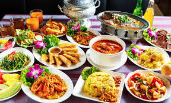

泰國菜有五大菜系

泰國中原菜：
泰國中部（不含首都圈），以阿瑜陀耶為中心，也是魚米之鄉，蔬菜水果茂盛。
食料較新鮮，而調料通常較甜。
名菜有：
椰奶湯（音：Tom kha gai；泰文：ต้มข่าไก่）
泰式紅咖哩（音：Gaeng Phet；泰文：แกงเผ็ด）
泰式綠咖哩（泰文：แกงเขียวหวาน）
金邊粉（音：Pad thai；泰文：ผัดไทย）
九層塔炒雞等。
泰國首都菜：
泰國首都及周圍，所有料理受潮州菜及葡萄牙菜影響。
名菜有：
高樓（音：Gao Law；泰文：เกาเหลา）
冬蔭功湯（泰國著名的酸辣湯）
紅火空心菜炒（音：Phat Pak Boong Fang Dang；泰文：ผัดผักบุ้งไฟแดง）
蚵仔煎（音：Aw Suan；泰文：ออส่วน）
炒飯
肉丁（音：Ba-Teng；泰文：บะเต็ง）
粥（音：Joke；泰文：โจ๊ก）
醬油炒（音：Phat si-io；泰文：ผัดซีอิ๊ว）等。
泰國南部菜：
泰國南部，兩邊為海，本地較多穆斯林。當地的特色，取鄰近馬來西亞菜多用的食料，如黃薑等。
調味料較為濃，而有時候帶酸。
著名菜式有：
泰式黃咖哩（Gaeng Panang）
魚咖哩
泰式伊斯蘭咖哩（音：Gaeng Massaman；泰文：แกงมัสมั่น）
雞飯
蘭納菜：
泰國北部，山區，深受緬甸菜的影響。
名菜有：
金麺（khao soi；泰文：ข้าวซอย）。
當地還有一種特別的酸肉，叫做「Nem」。
依善菜：
泰東北菜，和寮國菜相似，而米飯則愛吃糯米飯。
名菜有：
青木瓜沙拉（音：Som tam；泰文：ส้มตำ）
生肉沙拉（音：larb；泰文：ลาบ）等，
泰東北菜也會採用各種昆蟲，而Mang Dah（泰文：แมงดา；英文：giant water bug）更是地道名菜。
首頁
第2頁
第3頁
第5頁